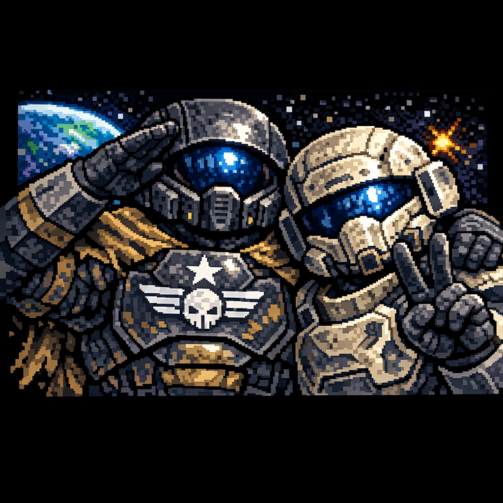
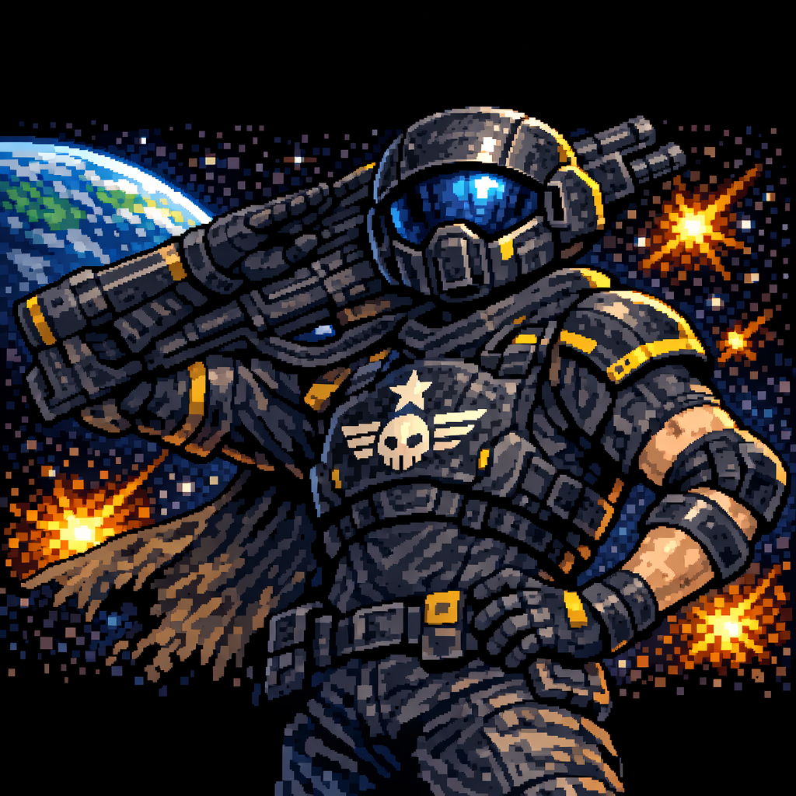
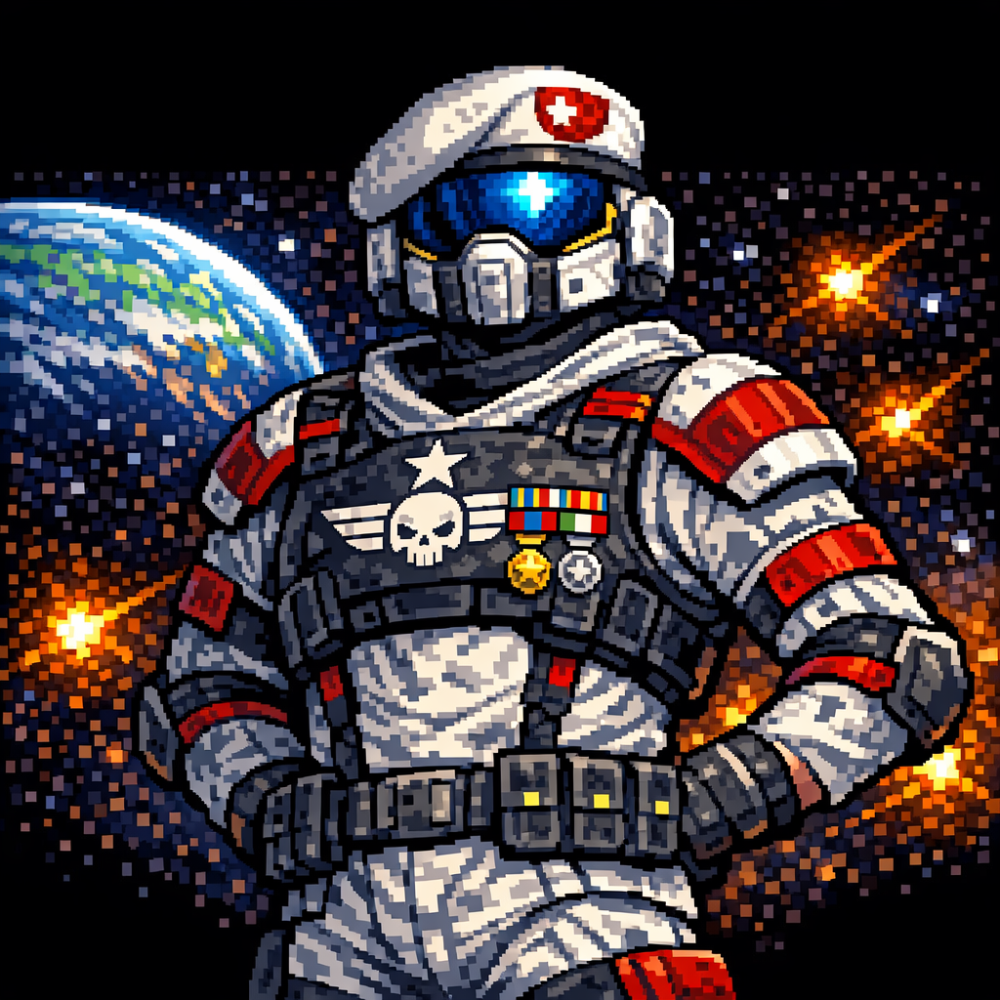

Comparte estrategias y noticias con otros jugadores

¡Hola! Acabo de completar la misión en Alpha Centauri. Muy intensa, pero valió la pena, Menos mal que tenía a mis compañeros cubriéndome las espaldas.

Yo todavía estoy planeando cómo defender Beta Prime. Ultimamnete los voladores me lo ponen dificil ¿Alguna estrategia para los enemigos voladores?

Mi consejo: usa el equipo anti-aéreo y coordina con tu equipo. Funciona mejor en misiones difíciles, como veterano te digo que no es fácil.